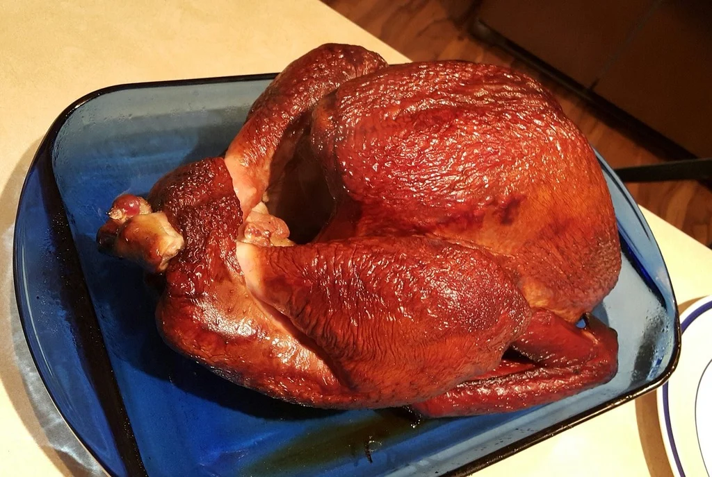

Smoked Turkey
Home

Description
Follow this recipe to create juicy and tender smoked turkey with a rich hickory flavor.
Prep Time: 20 mins Cook time: 9 hours
Ingredients
- 1 (10 pound) whole turkey
- 4 cloves garlic, crushed
- 2 tablespoons seasoned salt
- 1/2 cup butter
<1i>2 (12 fluid ounce) cans cola-flavored carbonated beverage
- 1 medium apple, quarterd
- 1 medium onion, quartered
- 1 tablespoon garlic powder
- 1 tablespoon salt
- 2 cups hickory wood chips, or more as needed
Steps
- Preheat smoker to 225 to 250 degrees fahrenheit (110 to 120 celsius)
- Pat turkey dry thoroughly with paper towels, inside and out.
-
- Rub crushed garlic over the outside of the turkey, sprinkle with seasoned salt. Transfer to a disposable roasting pan.
- Fill the turkey cavity with butter, cola, apple, onion, garlic powder, salt, and pepper. Cover turkey loosely with foil.
- Add wood chips to the smoker. Place the roasting pan in the preheated smoker. Smoke the turkey, basting every 1 to 2 hours with juices from the bottom of the roasting pan, for 5 hours.
- Add more wood chips if desired. Continue smoking and basting until turkey is no longer pink at the bone and the juices run clear, about four to five more hours. Insert instant-read thermometer into the thickest part of the thigh, near the bone. Thermometer should read 180 degrees fahrenheit (80 celsius). Remove from the smoker, tent loosely with foil, and let rest for 20 minutes before carving.
- Serve and enjoy!s